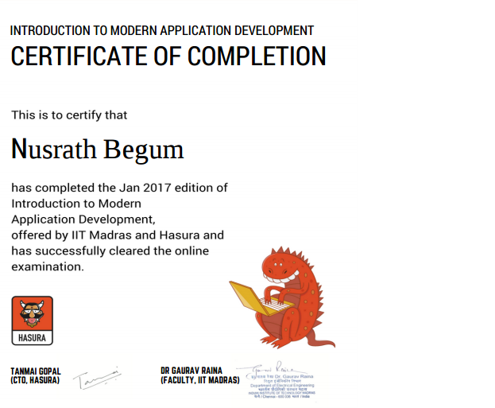
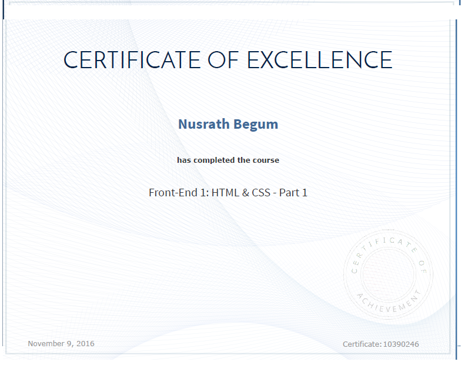
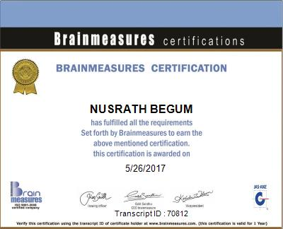

ABOUT

I'm Nusrath, a Front-end Web Developer with expertise in building beautiful websites. I specialize in HTML, CSS, jQuery, Bootstrap and Javascript.I am self-learner and It is my passion to build website for my clients and help them grow their business. I have experience in the following:- Building eye-catching sites.- Convert PSD to HTML- Responsive web design.I started my coding journey under boot camp of Coderstrust, a Danish International company that provides education for students in emerging nations who want to upgrade their programming skills.Who I Am:I am a B.E graduate in Electronics and Communication field. With a background of this, I know the importance of time management and design projects based on client's requirements. I assure you that I deliver high-quality work on time without getting down these:
DEDICATION
HARD WORK
JOB DONE INTIME
SKILLS
PORTFOLIO
You may check more projects on my github account: github.com/nusrathyasin. Some of the projects are showcased here:
 Google-Hidden facts
Google-Hidden facts
 Tribute Page of Kalam
Tribute Page of Kalam
 Quote Generator
Quote Generator
 Tic tac toe
Tic tac toe
OTHER WORKS
CERTIFICATES AND TRAINING

Introduction to Modern Application Development(IMAD) course conducted by IIT Madras & Hasura in India. This is the platform where i gained experience to built websites and publish those sites using github.

Coderstrust, a Danish International company that provides education for students in emerging nations who want to upgrade their programming skills. I have successfully designed many projects which have been evaluated by our code mentors and received high ratings.

Front end development examination was conducted by brainmeasures and complete details about my result is here:Result
OTHER WORKS
Animation using processing.js :Projects for u!!
Motivational video using MS-paint : Click here,Enjoy!!